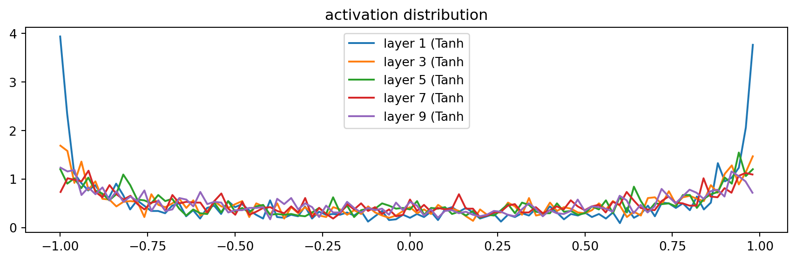

intro: why you should care & fun history
In previous lecture, we’re introduced to some common issues with our “shallow” neural network and how to fix with the initialization setting and Batch Normalization. We’re also learnt some diagnostic tools to observe forward pass activations, backward pass gradients, and weights update, and calibrate the training loop. In this lacture, we aim to replace this line of code:
with from-scratch-code. It’s basically identical to MicroGrad, but on Tensor rather than Scalar. Why?
The problem with Backpropagation is that it is a leaky abstraction. – Andrej Karpathy
Readmore: https://karpathy.medium.com/yes-you-should-understand-backprop-e2f06eab496b, and https://kratzert.github.io/2016/02/12/understanding-the-gradient-flow-through-the-batch-normalization-layer.html
Inshort, to effectively debug neural network, we should be deeply understanding how back propagation work under the hood.
starter code
Import libraries:
Read data:
Show the code
['emma', 'olivia', 'ava', 'isabella', 'sophia', 'charlotte', 'mia', 'amelia']Build vocab:
Show the code
{1: 'a', 2: 'b', 3: 'c', 4: 'd', 5: 'e', 6: 'f', 7: 'g', 8: 'h', 9: 'i', 10: 'j', 11: 'k', 12: 'l', 13: 'm', 14: 'n', 15: 'o', 16: 'p', 17: 'q', 18: 'r', 19: 's', 20: 't', 21: 'u', 22: 'v', 23: 'w', 24: 'x', 25: 'y', 26: 'z', 0: '.'}
27Build dataset splits:
Show the code
block_size = 3 # context length: how many characters do we take to predict the next one.
# build the dataset
def buid_dataset(words):
X, Y = [], []
for w in words:
context = [0] * block_size
for ch in w + '.':
ix = stoi[ch]
X.append(context)
Y.append(ix)
context = context[1:] + [ix]
X = torch.tensor(X)
Y = torch.tensor(Y)
print(X.shape, Y.shape)
return X, Y
import random
random.seed(42)
random.shuffle(words)
n1 = int(0.8 * len(words))
n2 = int(0.9 * len(words))
Xtr, Ytr = buid_dataset(words[:n1]) # 80#
Xdev, Ydev = buid_dataset(words[n1:n2]) # 10%
Xte, Yte = buid_dataset(words[n2:]) # 10%torch.Size([182625, 3]) torch.Size([182625])
torch.Size([22655, 3]) torch.Size([22655])
torch.Size([22866, 3]) torch.Size([22866])exercise 1: backproping the atomic compute graph
brief digression: bessel’s correction in batchnorm
exercise 2: cross entropy loss backward pass
exercise 3: batch norm layer backward pass
exercise 4: putting it all together
outro
resources
- Notebook: https://github.com/karpathy/nn-zero-to-hero/blob/master/lectures/makemore/makemore_part4_backprop.ipynb;
- Colab notebook: https://colab.research.google.com/drive/1WV2oi2fh9XXyldh02wupFQX0wh5ZC-z-?usp=sharing
Show the code
# Let's train a deeper network
# The classes we create here are the same API as nn.Module in PyTorch
class Linear:
"""
Simplifying Pytorch Linear Layer: https://pytorch.org/docs/stable/generated/torch.nn.Linear.html#torch.nn.Linear
"""
def __init__(self, fan_in, fan_out, bias=True):
self.weight = torch.randn((fan_in, fan_out), generator=g) / fan_in**0.5
self.bias = torch.zeros(fan_out) if bias else None
def __call__(self, x):
self.out = x @ self.weight
if self.bias is not None:
self.out += self.bias
return self.out
def parameters(self):
return [self.weight] + ([] if self.bias is None else [self.bias])
class BatchNorm1d:
"""
Simplifying Pytorch BatchNorm1D: https://pytorch.org/docs/stable/generated/torch.nn.BatchNorm1d.html
"""
def __init__(self, dim, eps=1e-5, momentum=0.1):
self.eps = eps
self.momentum = momentum
self.training = True # to differentiate usage of class in training or evaluation (using running mean/std)
# parameters (trained with backprop)
self.gamma = torch.ones(dim) # gain
self.beta = torch.zeros(dim) # bias
# buffers (trained with a running 'momentum update')
self.running_mean = torch.zeros(dim)
self.running_var = torch.ones(dim)
def __call__(self, x):
# calculate the forward pass
if self.training:
xmean = x.mean(0, keepdim=True) # batch mean
xvar = x.var(0, keepdim=True) # batch variance, follow the paper exactly
else:
xmean = self.running_mean
xvar = self.running_var
xhat = (x - xmean) / torch.sqrt(xvar + self.eps) # normalize to unit variance
self.out = self.gamma * xhat + self.beta # to tracking and visualizing data later on, PyTorch does not have this
# update the buffers
if self.training:
with torch.no_grad():
self.running_mean = (1 - self.momentum) * self.running_mean + self.momentum * xmean
self.running_var = (1 - self.momentum) * self.running_var + self.momentum * xvar
return self.out
def parameters(self):
return [self.gamma, self.beta]
class Tanh:
"""
Just calculate the Tanh, just PyTorch: https://pytorch.org/docs/stable/generated/torch.nn.Tanh.html
"""
def __call__(self, x):
self.out = torch.tanh(x)
return self.out
def parameters(self):
return []
n_embd = 10 # the dimensionality of the character embedding vectors
n_hidden = 100 # the number of neurons in the hidden layer of the MLP
g = torch.Generator().manual_seed(2147483647) # for reproducibility
C = torch.randn((vocab_size, n_embd), generator=g)
layers = [
Linear(n_embd * block_size, n_hidden), Tanh(),
Linear( n_hidden, n_hidden), Tanh(),
Linear( n_hidden, n_hidden), Tanh(),
Linear( n_hidden, n_hidden), Tanh(),
Linear( n_hidden, n_hidden), Tanh(),
Linear( n_hidden, vocab_size),
]
with torch.no_grad():
# last layer: make less confident
layers[-1].weight *= 0.1
# all other layers: apply gain
for layer in layers[:-1]:
if isinstance(layer, Linear):
layer.weight *= 5/3
parameters = [C] + [p for layer in layers for p in layer.parameters()]
print(sum(p.nelement() for p in parameters)) # number of parameters in total
for p in parameters:
p.requires_grad = True46497Show the code
# same optimization as last time
max_steps = 200000
batch_size = 32
lossi = []
ud = []
for i in range(max_steps):
# minibatch construct
ix = torch.randint(0, Xtr.shape[0], (batch_size,), generator=g)
Xb, Yb = Xtr[ix], Ytr[ix] # batch X,Y
# forward pass
emb = C[Xb] # embed the characters into vectors
x = emb.view(emb.shape[0], -1) # concatenate the vectors
for layer in layers:
x = layer(x)
loss = F.cross_entropy(x, Yb) # loss function
# backward pass
for layer in layers:
layer.out.retain_grad() # AFTER_DEBUG: would take out retain_graph
for p in parameters:
p.grad = None
loss.backward()
# update
lr = 0.1 if i < 150000 else 0.01 # step learning rate decay
for p in parameters:
p.data += -lr * p.grad
# track stats
if i % 10000 == 0: # print every once in a while
print(f'{i:7d}/{max_steps:7d}: {loss.item():.4f}')
lossi.append(loss.log10().item())
with torch.no_grad():
ud.append([((lr*p.grad).std() / p.data.std()).log10().item() for p in parameters])
break
# if i >= 1000:
# break # AFTER_DEBUG: would take out obviously to run full optimization 0/ 200000: 3.2962Show the code
# visualize histograms
plt.figure(figsize=(11, 3)) # width and height of the plot
legends = []
for i, layer in enumerate(layers[:-1]): # note: exclude the output layer
if isinstance(layer, Tanh):
t = layer.out
print('layer %d (%10s): mean %+.2f, std %.2f, saturated: %.2f%%' % (i, layer.__class__.__name__, t.mean(), t.std(), (t.abs() > 0.97).float().mean()*100))
hy, hx = torch.histogram(t, density=True)
plt.plot(hx[:-1].detach(), hy.detach())
legends.append(f'layer {i} ({layer.__class__.__name__}')
plt.legend(legends);
plt.title('activation distribution')layer 1 ( Tanh): mean -0.02, std 0.75, saturated: 20.25%
layer 3 ( Tanh): mean -0.00, std 0.69, saturated: 8.38%
layer 5 ( Tanh): mean +0.00, std 0.67, saturated: 6.62%
layer 7 ( Tanh): mean -0.01, std 0.66, saturated: 5.47%
layer 9 ( Tanh): mean -0.02, std 0.66, saturated: 6.12%Text(0.5, 1.0, 'activation distribution')